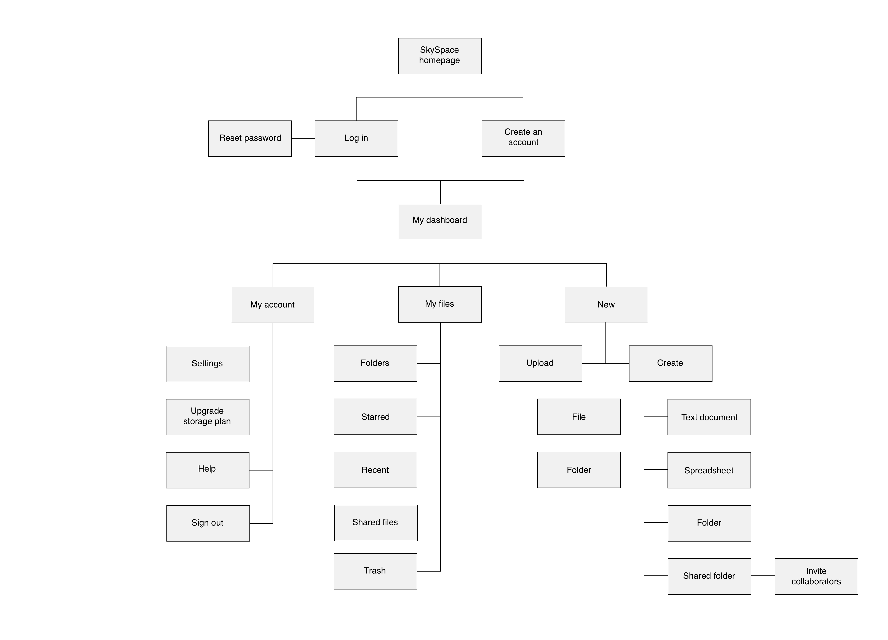
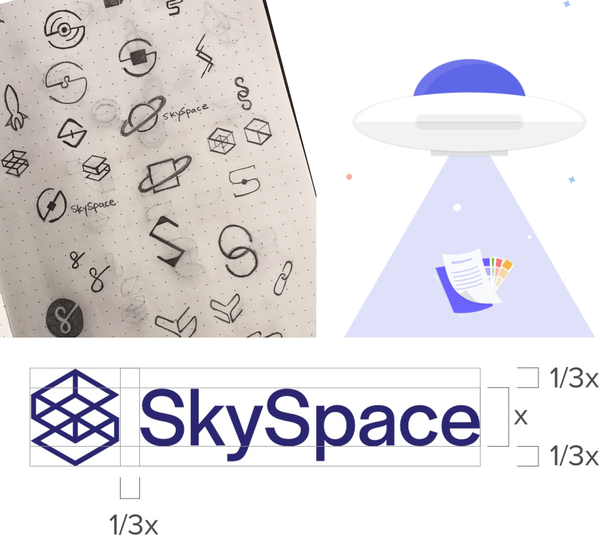
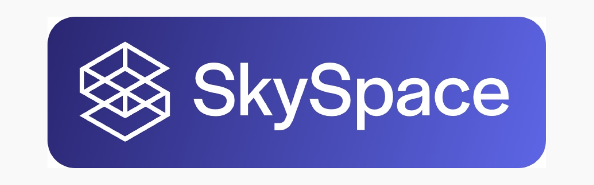
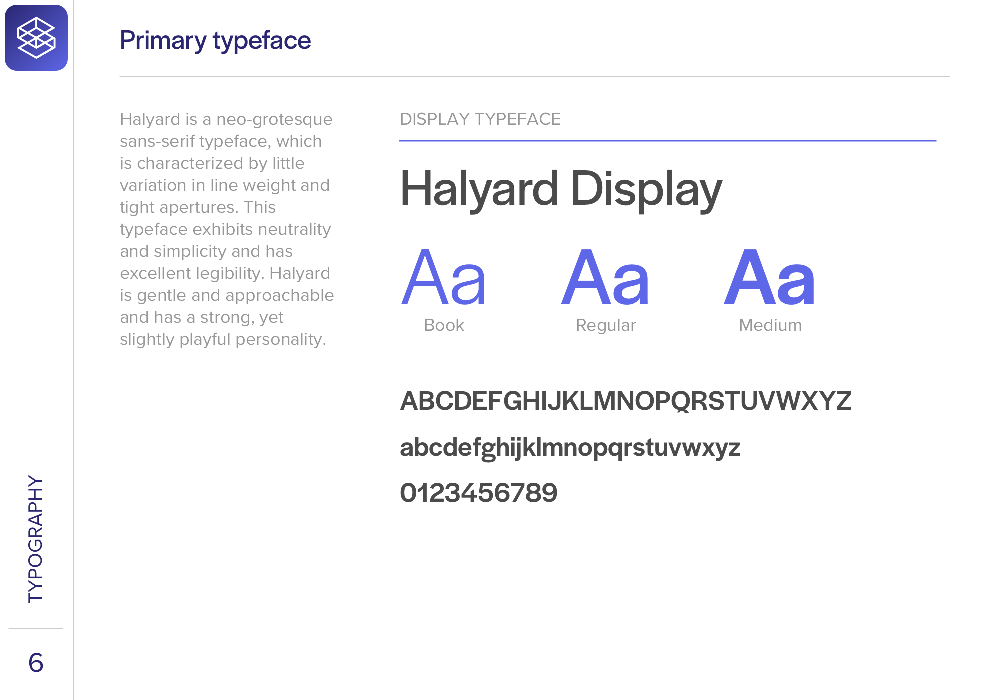
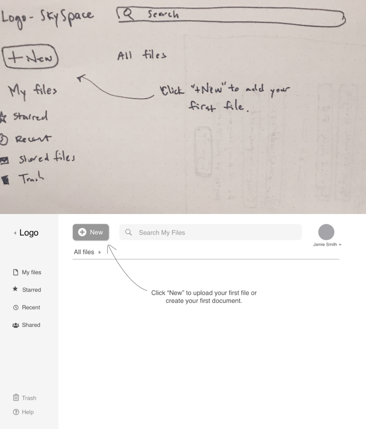

SkySpace
A cloud-based Saas app that provides an effortless way to create, organize and share digital content.
OVERVIEW
ROLES User Research, UX Design, Information Architecture, Branding, Visual Design
TOOLS Figma, Sketch, Illustrator, InVision, UsabilityHub, Maze
RESULTS Survey, personas, competitive analysis, user stories & flows, sitemap, style guide, wireframes, lo-fi hi-fi mockups, usability testing, clickable prototype
TIME June - October 2018
THE PROBLEM
We are often burdened with digital clutter and we’d do anything to reduce our mental load. We want to bring order to our ideas and we want to be able to do it on the run.
THE SOLUTION
Designed for individuals and small teams, SkySpace helps users manage their digital content. SkySpace focuses on streamlining these essential tasks: uploading, creating, organizing, and sharing content. SkySpace allows users to do so from one platform, synced across desktop and mobile.
PROCESS
01 Research & Discovery
02 Information Architecture
03 Brand Identity
04 Prototypes & Testing
05 Conclusion
01
Research & Discovery
USER SURVEYS
I conducted a survey to better understand the current habits and complaints of cloud storage users.
93%
use cloud storage for personal use
50%
use cloud storage for business use
78%
work in a collaborative environment
88%
of students use cloud storage
Survey participants indicated their essential cloud storage features, in order of importance:
1
File upload
2
Sharing content
3
Content creation
4
File organization
COMPETITIVE ANALYSIS
Evernote is approachable for new users and has effective mobile navigation.
Google Drive is great for personal use, scalable to small teams, and has strong collaboration features.
Dropbox is robust for large teams and Paper is easy to use.
Mobile navigation is a prominent pain point for Google Drive and Dropbox.
INTERVIEWS & PERSONAS
From analyzing the survey results and holding in-depth interviews, I identified two user personas: student and businessperson. Both user groups held file organization and collaboration of high importance. Their main motivations differed in price point: students need cheap storage options while businesspeople will pay for robust storage space.
02
Information Architecture
USER STORIES
Based on the client brief and the user research performed so far, I created a list of 53 user stories. Putting myself in each persona’s shoes, I narrowed it down to five user stories that encompassed the heart of SkySpace and served as the MVP.
1
Onboarding
2
Uploading a file
3
Organizing a file
4
Sharing a file
5
Upgrading the plan
The sitemap below shows the hierarchical and navigational structure of these user stories in one functional flow.
03
Brand Identity
As I began to brainstorm through word association and sketching exercises, “Bringing order to the vastness of the imagination” became a mission statement for my product. Ultimately, I chose “SkySpace” to reflect this.
The sketching process progressed from space motifs to, finally, a geometric form of the letter “S” that reveals different layers and planes. The geometric shape was built from a grid, which gives the design a solid, dependable foundation.
TONE OF VOICE
Dependable
Our users depend on us to provide a trustworthy, secure service that adapts to changing technology and user needs.
Versatile
This application is used for leisure, business and everything in between. We think it’s important that we provide a platform for an individual’s or team’s craft, whatever it might be.
Approachable
SkySpace is designed to be friendly - straightforward and without clutter. It’s meant to be inclusive for any age or ability.
Navy and Galaxy Purple gave the product a soothing feeling. In a world of digital clutter and stress, users need a product that emotes calmness. Used for call to actions and system feedback.
Lilac and Grey are playful complementary colors that are friendly and approachable. The overall purple tone conveys creativity and dependability.
04
Prototypes & Testing
WIREFRAMES & LO-FI PROTOTYPE
Building on the sitemap and user flows, I sketched the main screen of the five essential tasks. Next, to visualize each screen and each interaction necessary to complete the task, I created a clickable low-fidelity prototype in InVision.
USABILITY TESTING: PRELIMINARY ROUNDS
Following a usability test script, I conducted testing on the low-fidelity prototype with volunteers over Skype. Maze testing allowed me to gain insight from more people in a shorter amount of time.
Action items:
Make language more direct
Unite button design
Remove "save button from the content creation screen"

KEY TAKEAWAY Usability testing allowed me to disassociate from my biases and integrate user- centered interpretations. In-person testing was optimal for systematic observation of facial expressions and other body language. Remote testing using Maze was valuable, too, in its ability to capture feedback from many people.
HI-FI PROTOTYPE & TESTING
In this stage, I integrated color, branding, images and icons to give SkySpace its personality. Alignment, emphasis, sizing and proximity of elements changed tremendously between iterations.
Action items:
Provide better system feedback to confirm actions
Clean up global navigation issues with “New” button and search bar
The “+/New” button in the vertical strip was visually appealing but had some usability flaws. To bypass the navigation issues that users had in testing, I decided to place the search bar at the top of the screen. The “+/New” button is now larger and more visible. In a UsabilityHub preference test pitting these two layouts against each other, the second layout won by a small margin of 2 people out of 20 participants.
Better utilize vertical space

Since I was building this mobile prototype for a website, instead of an app, I wanted to give more real estate to the vertical space. The navigation bar is not that essential to a user on his or her phone and, so, got condensed into a hamburger menu in the upper left corner.
KEY TAKEAWAY In the future, I would spend more time ensuring my low-fidelity wireframes were testing seamlessly before jumping into the next phase of adding detail and color. This means more testing earlier in the process and more iterations to optimize functionality in the low-fidelity stage.

05
Conclusion
LEARNING MOMENTS
SkySpace taught me that the constant feedback loop of “build, measure, implement and repeat” is invaluable.
One of my most critical takeaways in this process came to me while writing this case study. Articulating my design decisions in a compelling and systematic way was my biggest challenge. Writing out my process forced me to challenge my preconceived notions, reveal my weaknesses, and bring a sense of awareness to my actions.
Thanks for reading!